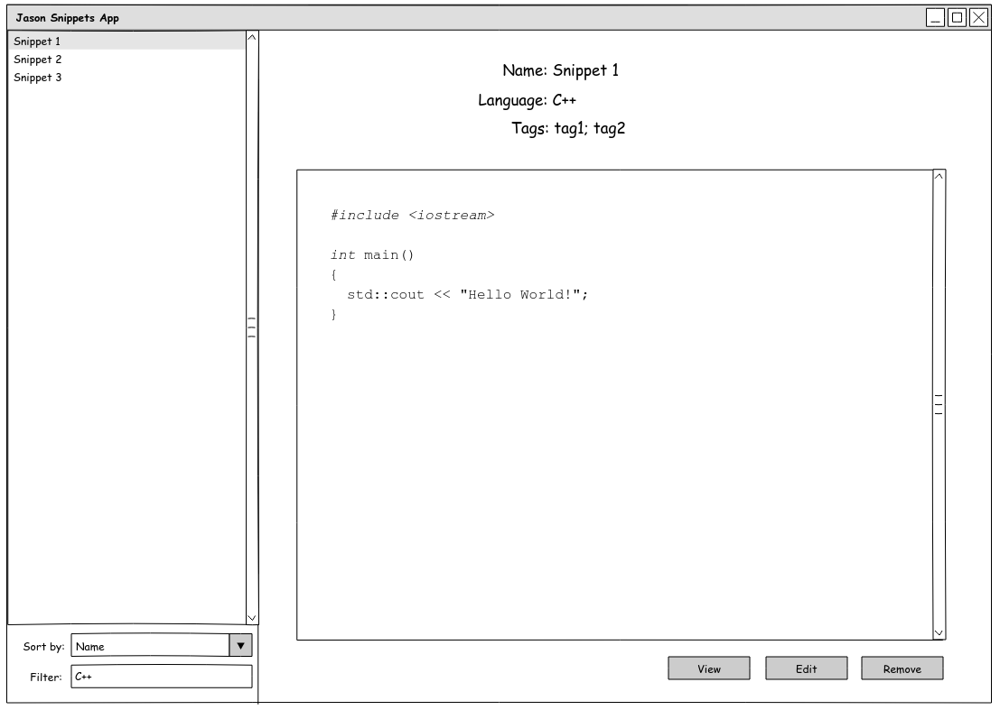
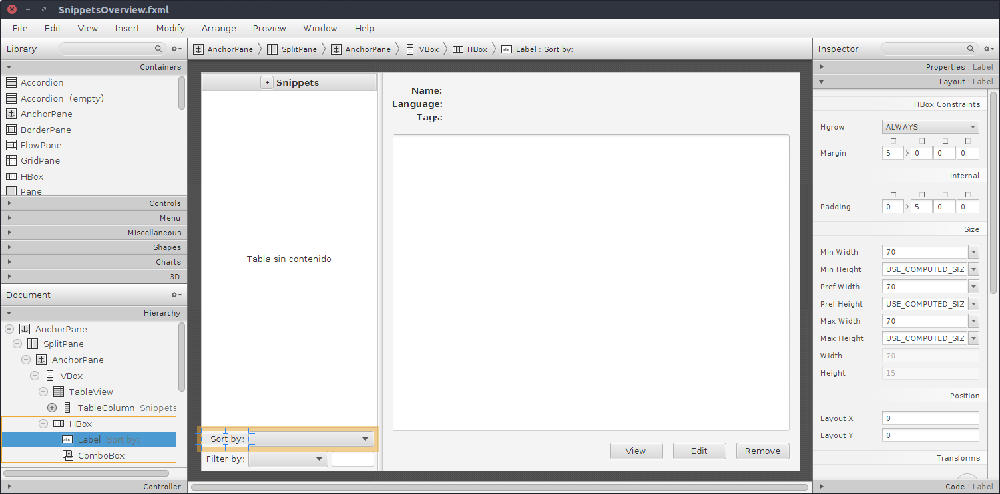
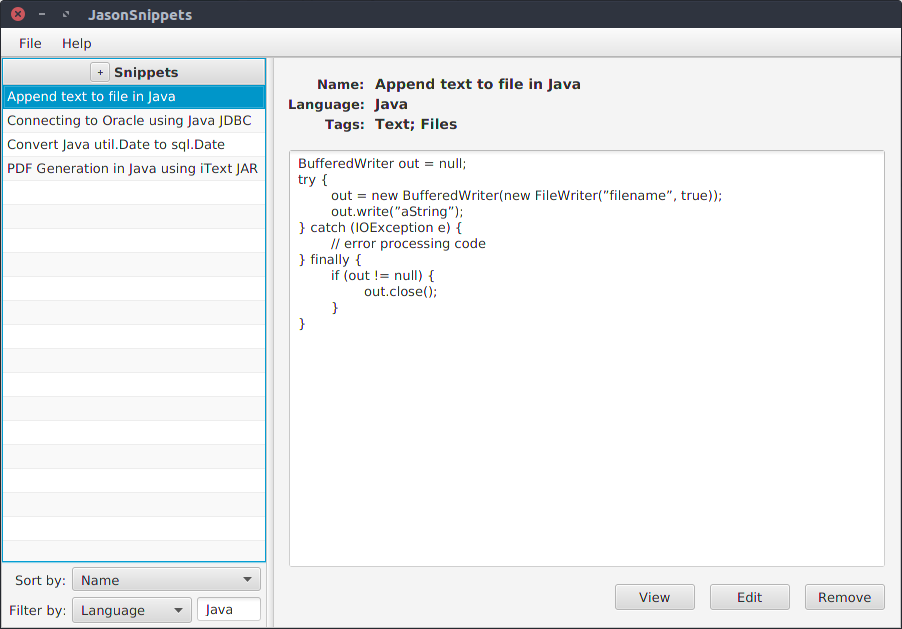

This is a powerful cross-platform application for managing code snippets. It uses the default file system and Json format for persistence, but the original idea is to extend it by offering a consistent API so that it can be integrated with any service such as Google Drive, Dropbox or Github.
There are many tools of this type and the most trending ones are web services. However, I think that this type of tool should be open source, privacy friendly, easy to use, fast, tiny and especially extensible.
The main motivation for developing this desktop application was to learn and develop an application using the JavaFX platform. I have a lot of experience in developing graphical applications with Java but never had the opportunity to learn and develop one with this modern framework.
Concept
I want the application to be as simple and intuitive as possible. Since there are no important operations that a user wants to do on a snippet beyond viewing it. I prepared a small mockup quickly with Pencil so as to have a good visual reference of the application that I wanted to develop.
 MockupImplementation
As I had no previous experience with this framework, I had to document very well and follow educational tutorials before and during the development of the application. I was very clear that I did not want to get out of the usual development patterns. Therefore, in the project you can quickly see the MVC pattern just looking at the package names.
On the one hand we have the data model that is really simple. The most significant POJO class is called the Snippet and contains all the necessary information. The model has serializers to store and consume data from external sources. The interface is called ISnippetSerializer and its most important implementation is JsonSerializer. This implementation uses Gson library, which does almost all the work.
On the other hand we have the views, which are defined in the custom domain language of JavaFX. These FXML files are easily editable with SceneBuilder, which is a WYSWYG editor. There are only three views (RootLayout, SnippetDialog and SnippetsOverview).
 SnippetsOverview in SceneBuilder ScreenshotThere is one controller per view and they are very easy to implement. It is important to highlight that it is necessary to inject the dependencies that controller needs to perform its actions. The most important dependency to be injected is SnippetsRepository.
Persistence
For the storage of data has been hidden all the logic following the repository pattern. Therefore, the object that interacts with the rest of the application for the persistence of the data is SnippetsRepository. This has start/stop and CRUD methods. It exposes an ObservableList (a special collection of JavaFX) and deal with the complexity that may exist in the treatment of asynchronous operations through the use of executors and callbacks.
The final persistence is defined in the ISnippetsPersistence interface. This can be implemented in any way. There is an implementation called DummyPersistence because it only stores snippets in memory while the application is running. It was very useful during the development and for unit tests. However, the default implementation is FileSystemPersistence which uses the default file system.
Conclusion
Since I had experience in developing graphical applications with java, this development was not a big challenge for me. But it was a nice way to discover and take my first steps with JavaFX. I think this platform has a lot of potential and I hope to continue doing projects with it in the future. I think the result is optimal and the application is usable and useful, at least for me.
 Application ScreenshotThere is a written roadmap in order to continue the development of this application in the future. This will depend on if I see that it is interesting to add new features and is well received. Feel free to contact me to suggest anything or report any bug.
The application is free software (GPLv3) and you can check the whole project in github.